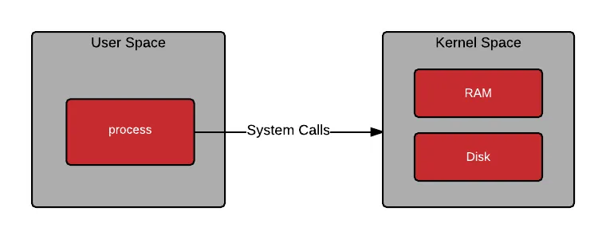
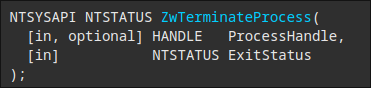

In this part of the course, we'll look at how to interact directly with the Windows and Linux operating system kernels to escape the surveillance of security solutions.
System calls are essential interfaces between processes and the operating system kernel for the purpose of interacting with system resources.
Here is a diagram from RedHat: 
In concrete terms, a system call generally consists of two assembly instructions:
rax registersyscall instruction.To set the system call arguments, this is generally done via other registers (rdi, rsi, etc.) on Linux and directly on the stack on Windows, upstream of the syscall instruction.
We use them constantly without realizing it, because we use libraries that serve as interfaces for these system calls, notably "libc" or the "Windows API".
In this course, we'll look at how to call them without going through these libraries, whose calls are monitored by security solutions.
To simplify our example, we'll demonstrate the use of a system call with the following program:
fn main() {
println!("Hello, world!");
system_call_exit();
println!("You shouldn't see me !");
}
The system calls on Linux are the easiest to use and the most documented. You can find them all on this site: https://x64.syscall.sh/.
The one we're going to use is simply called exit, identified by the number 60. Here's how it's called in assembler:
; exit(0)
mov rdi, 0
mov rax, 60
syscall
Unlike Linux, system calls are more complicated to use and not officially documented. You can get an up-to-date list with their numbers at this site: https://hfiref0x.github.io/NT10_syscalls.html.
The one that terminates a process is called NtTerminateProcess, with number 44. For this system call, we're in luck, as it's the same for every version. But if you looked at the link given just before, you'll have noticed that for the majority of system calls, the number changes with EACH version of Windows, which means we'll have to update our code each time.
For the arguments, it will look for the arguments on stack, so we'll need to place the instructions in a function with the following prototype given in the Microsoft documentation:

The assembler instructions are as follows:
mov r10, rcx
mov eax, 44
syscall
The r10, rcx instruction is required by Windows to save a state.
To call these assembler instructions in Rust, we'll use the global_asm macro, which takes arguments directly from the assembler in a character string.
Inside, we'll write the assembler functions that will make the system calls.
Then, all we have to do is define the prototypes of our Rust functions to call them, and we're ready to go.
Here's the source code that does it all:
use std::arch::global_asm;
#[cfg(target_os = "windows")]
use windows::Win32::{Foundation::HANDLE, System::Threading::GetCurrentProcess};
global_asm!(
"
windows_exit:
mov r10, rcx
mov eax, 44
syscall
ret
linux_exit:
mov rdi, 0
mov rax, 60
syscall
ret
"
);
#[cfg(target_os = "windows")]
extern "C" {
pub fn windows_exit(handle: HANDLE, status: i32) -> i32;
}
#[cfg(target_os = "linux")]
extern "C" {
pub fn linux_exit() -> i32;
}
fn main() {
println!("Hello, world!");
unsafe {
#[cfg(target_os = "windows")]
windows_exit(GetCurrentProcess(), 99);
#[cfg(target_os = "linux")]
linux_exit();
}
println!("You shouldn't see me !");
}
Now you know how to make your own system calls and bypass the EDRs that monitor calls to system libraries.
However, there's still a problem on the Windows side: the system call numbers change with each kernel version, which is very problematic, but there are techniques we'll look at in this course for implementing workarounds.